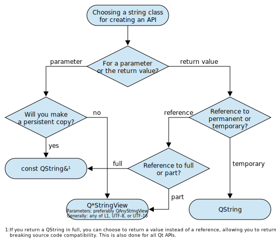
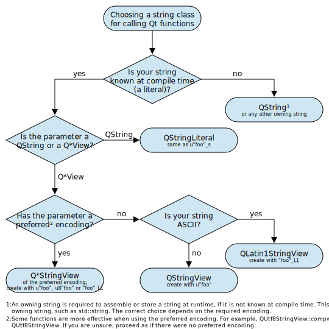

Classes for string data
Overview
This page gives an overview over string classes in Qt, in particular the large amount of string containers and how to use them efficiently in performance-critical code.
The following instructions for efficient use are aimed at experienced developers working on performance-critical code that contains considerable amounts of string processing. This is, for example, a parser or a text file generator. Generally, QString can be used everywhere and it will perform fine. It also provides APIs for handling several encodings (for example QString::fromLatin1()). For many applications and especially when string-processing plays an insignificant role for performance, QString will be a simple and sufficient solution. Some Qt functions return a QStringView. It can be converted to a QString with QStringView::toString() if required.
Impactful tips
The following three rules improve string handling substantially without increasing the complexity too much. Follow these rules to get nearly optimal performance in most cases. The first two rules address encoding of string literals and marking them in source code. The third rule addresses deep copies when using parts of a string.
- All strings that only contain ASCII characters (for example log messages) can be encoded with Latin-1. Use the string literal
"foo"_L1. Without this suffix, string literals in source code are assumed to be UTF-8 encoded and processing them will be slower. Generally, try to use the tightest encoding, which is Latin-1 in many cases. - User-visible strings are usually translated and thus passed through the QObject::tr() function. This function takes a string literal (const char array) and returns a QString with UTF-16 encoding as demanded by all UI elements. If the translation infrastructure is not used, you should use UTF-16 encoding throughout the whole application. Use the string literal
u"foo"to create UTF-16 string literals or the Qt specific literalu"foo"_sto directly create a QString. - When processing parts of a QString, instead of copying each part into its own QString object, create QStringView objects instead. These can be converted back to QString using QStringView::toString(), but avoid doing so as much as possible. If functions return QStringView, it is most efficient to keep working with this class, if possible. The API is similar to a constant QString.
Efficient usage
To use string classes efficiently, one should understand the three concepts of:
- Encoding
- Owning and non-owning containers
- Literals
Encoding
Encoding-wise Qt supports UTF-16, UTF-8, Latin-1 (ISO 8859-1) and US-ASCII (that is the common subset of Latin-1 and UTF-8) in one form or another.
- Latin-1 is a character encoding that uses a single byte per character which makes it the most efficient but also limited encoding.
- UTF-8 is a variable-length character encoding that encodes all characters using one to four bytes. It is backwards compatible to US-ASCII and it is the common encoding for source code and similar files. Qt assumes that source code is encoded in UTF-8.
- UTF-16 is a variable-length encoding that uses two or four bytes per character. It is the common encoding for user-exposed text in Qt.
See the information about support for Unicode in Qt for more information.
Other encodings are supported in the form of single functions like QString::fromUcs4() or of the QStringConverter classes. Furthermore, Qt provides an encoding-agnostic container for data, QByteArray, that is well-suited to storing binary data. QAnyStringView keeps track of the encoding of the underlying string and can thus carry a view onto strings with any of the supported encoding standards.
Converting between encodings is expensive, therefore, avoid if possible. On the other hand, a more compact encoding, particularly for string literals, can reduce binary size, which can increase performance. Where string literals can be expressed in Latin-1, it manages a good compromise between these competing factors, even if it has to be converted to UTF-16 at some point. When a Latin-1 string must be converted to a QString, it is done relatively efficiently.
Functionality
String classes can be further distinguished by the functionality they support. One major distinction is whether they own, and thus control, their data or merely reference data held elsewhere. The former are called owning containers, the latter non-owning containers or views. A non-owning container type typically just records a pointer to the start of the data and its size, making it lightweight and cheap, but it only remains valid as long as the data remains available. An owning string manages the memory in which it stores its data, ensuring that data remains available throughout the lifetime of the container, but its creation and destruction incur the costs of allocating and releasing memory. Views typically support a subset of the functions of the owning string, lacking the possibility to modify the underlying data.
As a result, string views are particularly well-suited to representing parts of larger strings, for example in a parser, while owning strings are good for persistent storage, such as members of a class. Where a function returns a string that it has constructed, for example by combining fragments, it has to return an owning string; but where a function returns part of some persistently stored string, a view is usually more suitable.
Note that owning containers in Qt share their data implicitly, meaning that it is also efficient to pass or return large containers by value, although slightly less efficient than passing by reference due to the reference counting. If you want to make use of the implicit data sharing mechanism of Qt classes, you have to pass the string as an owning container or a reference to one. Conversion to a view and back will always create an additional copy of the data.
Finally, Qt provides classes for single characters, lists of strings and string matchers. These classes are available for most supported encoding standards in Qt, with some exceptions. Higher level functionality is provided by specialized classes, such as QLocale or QTextBoundaryFinder. These high level classes usually rely on QString and its UTF-16 encoding. Some classes are templates and work with all available string classes.
Literals
The C++ standard provides string literals to create strings at compile-time. There are string literals defined by the language and literals defined by Qt, so-called user-defined literals. A string literal defined by C++ is enclosed in double quotes and can have a prefix that tells the compiler how to interpret its content. For Qt, the UTF-16 string literal u"foo" is the most important. It creates a string encoded in UTF-16 at compile-time, saving the need to convert from some other encoding at run-time. QStringView can be easily and efficiently constructed from one, so they can be passed to functions that accept a QStringView argument (or, as a result, a QAnyStringView).
User-defined literals have the same form as those defined by C++ but add a suffix after the closing quote. The encoding remains determined by the prefix, but the resulting literal is used to construct an object of some user-defined type. Qt thus defines these for some of its own string types: u"foo"_s for QString, "foo"_L1 for QLatin1StringView and u"foo"_ba for QByteArray. These are provided by using the StringLiterals Namespace. A plain C++ string literal "foo" will be understood as UTF-8 and conversion to QString and thus UTF-16 will be expensive. When you have string literals in plain ASCII, use "foo"_L1 to interpret it as Latin-1, gaining the various benefits outlined above.
Basic string classes
The following table gives an overview over basic string classes for the various standards of text encoding.
| Encoding | C++ String literal | Qt user-defined literal | C++ Character | Qt Character | Owning string | Non-owning string |
|---|---|---|---|---|---|---|
| Latin-1 | - | ""_L1 | - | QLatin1Char | - | QLatin1StringView |
| UTF-8 | u8"" | - | char8_t | - | - | QUtf8StringView |
| UTF-16 | u"" | u""_s | char16_t | QChar | QString | QStringView |
| Binary/None | - | ""_ba | std::byte | - | QByteArray | QByteArrayView |
| Flexible | any | - | - | - | - | QAnyStringView |
Some of the missing entries can be substituted with built-in and standard library C++ types: An owning Latin-1 or UTF-8 encoded string can be std::string or any 8-bit char array. QStringView can also reference any 16-bit character arrays, such as std::u16string or std::wstring on some platforms.
Qt also provides specialized lists for some of those types, that are QStringList and QByteArrayView, as well as matchers, QLatin1StringMatcher and QByteArrayMatcher. The matchers also have static versions that are created at compile-time, QStaticLatin1StringMatcher and QStaticByteArrayMatcher.
Further worth noting:
- QStringLiteral is a macro which is identical to
u"foo"_sand available without the StringLiterals Namespace. Preferably you should use the modern string literal. - QLatin1String is a synonym for QLatin1StringView and exists for backwards compatibility. It is not an owning string and might be removed in future releases.
- QAnyStringView provides a view for a string with any of the three supported encodings. The encoding is stored alongside the reference to the data. This class is well suited to create interfaces that take a wide spectrum of string types and encodings. In contrast to other classes, no processing is conducted on QAnyStringView directly. Processing is conducted on the underlying QLatin1StringView, QUtf8StringView or QStringView in the respective encoding. Use QAnyStringView::visit() to do the same in your own functions that take this class as an argument.
- A QLatin1StringView with non-ASCII characters is not straightforward to construct in a UTF-8 encoded source code file and requires special treatment, see the QLatin1StringView documentation.
- QStringRef is a reference to a portion of a QString, available in the Qt5Compat module for backwards compatibility. It should be replaced by QStringView.
High-level string-related classes
More high-level classes that provide additional functionality work mostly with QString and thus UTF-16. These are:
- QRegularExpression, QRegularExpressionMatch and QRegularExpressionMatchIterator to work with pattern matching and regular expressions.
- QLocale to convert numbers and data to and from strings in a manner appropriate to the user's language and culture.
- QCollator and QCollatorSortKey to compare strings with respect to the users language, script or territory.
- QTextBoundaryFinder to break up text ready for typesetting in accord with Unicode rules.
QStringBuilder, an internal class that will substantially improve the performance of string concatenations with the+operator, see the QString documentation.
Some classes are templates or have a flexible API and work with various string classes. These are
- QTextStream to stream into QIODevice, QByteArray or QString
- QStringTokenizer to split strings
Which string class to use?
The general guidance in using string classes is:
- Avoid copying and memory allocations,
- Avoid encoding conversions, and
- Choose the most compact encoding.
Qt provides many functionalities to avoid memory allocations. Most Qt containers employ Implicit Sharing of their data. For implicit sharing to work, there must be an uninterrupted chain of the same class — converting from QString to QStringView and back will result in two QStrings that do not share their data. Therefore, functions need to pass their data as QString (both values or references work). Extracting parts of a string is not possible with implicit data sharing. To use parts of a longer string, make use of string views, an explicit form of data sharing.
Conversions between encodings can be reduced by sticking to a certain encoding. Data received, for example in UTF-8, is best stored and processed in UTF-8 if no conversation to any other encoding is required. Comparisons between strings of the same encoding are fastest and the same is the case for most other operations. If strings of a certain encoding are often compared or converted to any other encoding it might be beneficial to convert and store them once. Some operations provide many overloads (or a QAnyStringView overload) to take various string types and encodings and they should be the second choice to optimize performance, if using the same encoding is not feasible. Explicit encoding conversions before calling a function should be a last resort when no other option is available. Latin-1 is a very simple encoding and operation between Latin-1 and any other encoding are almost as efficient as operations between the same encoding.
The most efficient encoding (from most to least efficient Latin-1, UTF-8, UTF-16) should be chosen when no other constrains determine the encoding. For error handling and logging QLatin1StringView is usually sufficient. User-visible strings in Qt are always of type QString and as such UTF-16 encoded. Therefore it is most effective to use QStrings, QStringViews and QStringLiterals throughout the life-time of a user-visible string. The QObject::tr() function provides the correct encoding and type. QByteArray should be used if encoding does not play a role, for example to store binary data, or if the encoding is unknown.
String class for creating API

Member variables
Member variables should be of an owning type in nearly all cases. Views can only be used as member variables if the lifetime of the referenced owning string is guaranteed to exceed the lifetime of the object.
Function arguments
Function arguments should be string views of a suitable encoding in most cases. QAnyStringView can be used as a parameter to support more than one encoding and QAnyStringView::visit() can be used internally to fork off into per-encoding functions. If the function is limited to a single encoding, QLatin1StringView, QUtf8StringView, QStringView or QByteArrayView should be used.
If the function saves the argument in an owning string (usually a setter function), it is most efficient to use the same owning string as function argument to make use of the implicit data sharing functionality of Qt. The owning string can be passed as a const reference. Overloading functions with multiple owning and non-owning string types can lead to overload ambiguity and should be avoided. Owning string types in Qt can be automatically converted to their non-owning version or to QAnyStringView.
Return values
Temporary strings have to be returned as an owning string, usually QString. If the returned string is known at compile-time use u"foo"_s to construct the QString structure at compile-time. If existing owning strings (for example QString) are returned from a function in full (for example a getter function), it is most efficient to return them by reference. They can also be returned by value to allow returning a temporary in the future. Qt's use of implicit sharing avoids the performance impact of allocation and copying when returning by value.
Parts of existing strings can be returned efficiently with a string view of the appropriate encoding, for an example see QRegularExpressionMatch::capturedView() which returns a QStringView.
String class for using API

To use a Qt API efficiently you should try to match the function argument types. If you are limited in your choice, Qt will conduct various conversions: Owning strings are implicitly converted to non-owning strings, non-owning strings can create their owning counter parts, see for example QStringView::toString(). Encoding conversions are conducted implicitly in many cases but this should be avoided if possible. To avoid accidental implicit conversion from UTF-8 you can activate the macro QT_NO_CAST_FROM_ASCII.
If you need to assemble a string at runtime before passing it to a function you will need an owning string and thus QString. If the function argument is QStringView or QAnyStringView it will be implicitly converted.
If the string is known at compile-time, there is room for optimization. If the function accepts a QString, you should create it with u"foo"_s or the QStringLiteral macro. If the function expects a QStringView, it is best constructed with an ordinary UTF-16 string literal u"foo", if a QLatin1StringView is expected, construct it with "foo"_L1. If you have the choice between both, for example if the function expects QAnyStringView, use the tightest encoding, usually Latin-1.
List of all string related classes
Unified view on Latin-1, UTF-8, or UTF-16 strings with a read-only subset of the QString API | |
Array of bytes | |
List of byte arrays | |
Holds a sequence of bytes that can be quickly matched in a byte array | |
View on an array of bytes with a read-only subset of the QByteArray API | |
16-bit Unicode character | |
Compares strings according to a localized collation algorithm | |
Can be used to speed up string collation | |
8-bit ASCII/Latin-1 character | |
Optimized search for substring in Latin-1 text | |
Thin wrapper around a US-ASCII/Latin-1 encoded string literal | |
Converts between numbers and their string representations in various languages | |
Pattern matching using regular expressions | |
The results of a matching a QRegularExpression against a string | |
Iterator on the results of a global match of a QRegularExpression object against a string | |
Compile-time version of QByteArrayMatcher | |
Compile-time version of QLatin1StringMatcher | |
Unicode character string | |
Base class for encoding and decoding text | |
State-based decoder for text | |
State-based encoder for text | |
List of strings | |
Holds a sequence of characters that can be quickly matched in a Unicode string | |
Splits strings into tokens along given separators | |
Unified view on UTF-16 strings with a read-only subset of the QString API | |
Way of finding Unicode text boundaries in a string | |
Convenient interface for reading and writing text | |
Unified view on UTF-8 strings with a read-only subset of the QString API |